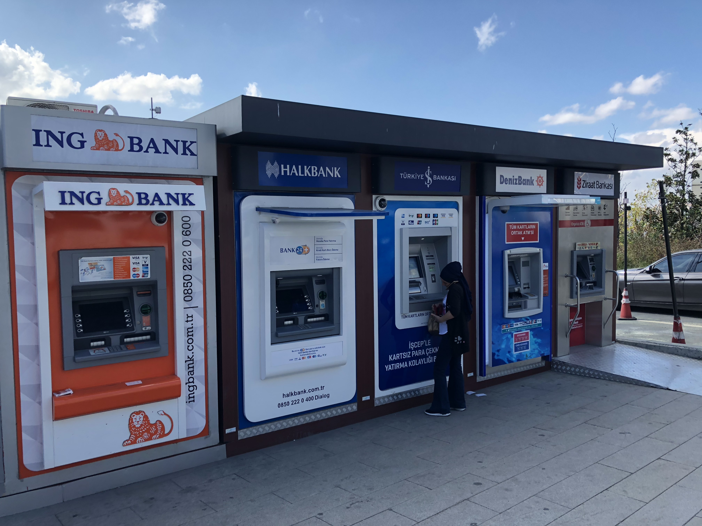
キャッシュレス世界旅行レポート第3弾では、中東2カ国のキャッシュレス状況を紹介する。
日本で既にトレンドとなっている「キャッシュレス」。だが、日本のキャッシュレス比率は先進国の中では非常に低いことをよく耳にする。日本のキャッシュレス化に向けたさまざまな取り組みが官民問わず行われている一方で、世界各国ではどのようにキャッシュレスが推進されているのか。そんな疑問を、インフキュリオン・グループに来年度入社する東京大学4年工学部物理工学科の森本颯太（はやた）が、内定者インターンとして「現金決済禁止という制約のもと完全キャッシュレスで世界11カ国を1カ月間単独」で調査。各国のキャッシュレス事情について現地の雰囲気とともに、その様子を7回に渡ってレポートしていく。現金が使えないからこそできる体験。現金がないと何もできない国もあれば、どんなところでもカードやアプリで決済できる国などさまざまで波乱万丈な旅となった。
第3回目は5カ国目イスラエルと6カ国目トルコの中東コンビ。近年IT大国として目覚ましい発展を遂げるイスラエルでは、首都テルアビブとエルサレムを訪れ、カード決済からブロックチェーン技術を用いたウォレットアプリまでさまざまなキャッシュレス事情を調査した。また、今年になってから政治問題などにより自国通貨リラの価値が急激に下がったトルコの首都イスタンブールでは、意外とカード決済が普及しており驚いた。さらに、現地の方々が自国通貨に対してどう感じているかなどの生の声を聞くことができた。
イスラエル
ネットで検索してもなかなか出てこないイスラエルの決済事情。近年IT大国として目覚ましい発展を遂げる同国の首都テルアビブでは、想像以上にさまざまなキャッシュレスサービスが広がっていた。また観光地として有名なエルサレムでは、キリスト教、ユダヤ教、イスラム教の三つの宗教が混在する中、決済手段はどうなっているのかを調査した。
1.テルアビブのキャッシュレス事情
今回テルアビブではご多忙の中、Aniwo株式会社代表取締役CEO 寺田彼日さんにお時間をいただき、現地でのキャッシュレス事情についてお話を伺うことができた。Aniwoは、現地拠点を持つ日系VCから投資を受けた日本人創業者が、2014年にイスラエルで設立した企業である。
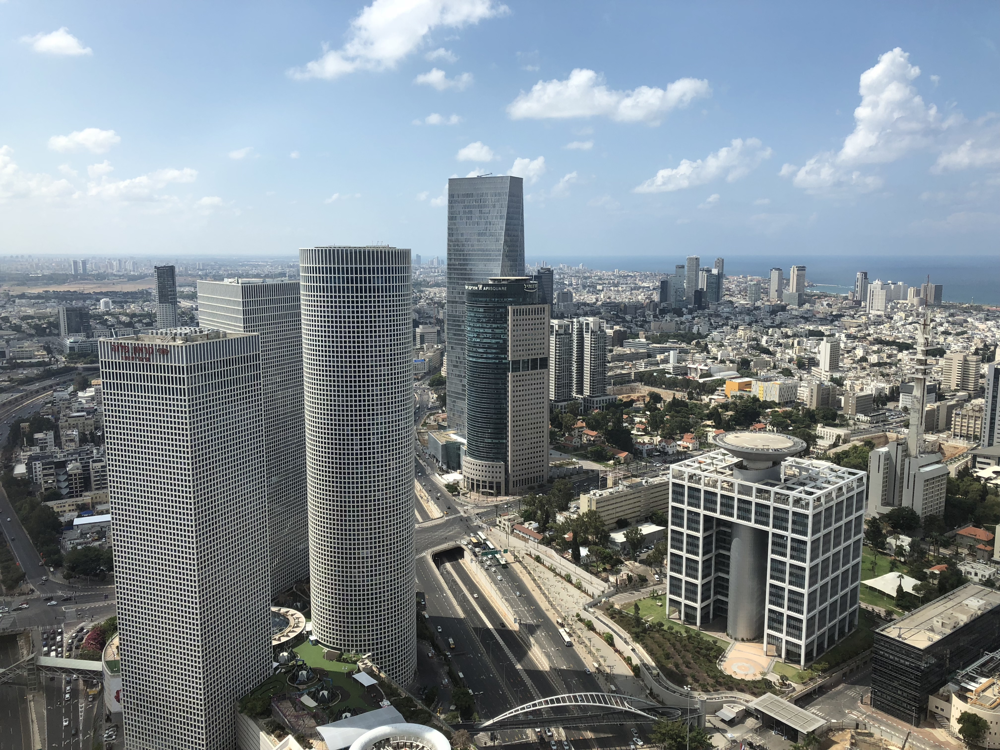
写真1.首都テルアビブ
Aniwo創業者の寺田さんに、現地の雰囲気や実際に使用している便利なアプリを紹介してもらった。今回は、その中でもブロックチェーン技術を利用した「Colu」とタクシー配車アプリ「Gett」を実際に利用してみた。
1.1浸透しつつあるブロックチェーン技術 「Colu」
2017年、日本でも法律改正やハッキング問題などで大きな話題となったビットコインなどの暗号通貨。その暗号通貨の根本をなすブロックチェーン技術の開発は各国でも進んでいるが、特にテルアビブはその最先端を走っている。寺田さんも実際に使っているColuというアプリは、ブロックチェーン技術を利用した地元地域の経済活性化を目的に、2014年に創業されたイスラエルのベンチャー企業「Colu」が提供している。
Coluはウォレットアプリであり、Coluの加盟店で商品を購入し、アプリ内で購入金額を入力して送金することで決済が完了する。そしてその決済はブロックチェーン上に記録され、利用者は決済額に応じたインセンティブを取得することができる。特徴的なのは、そのインセンティブがその地域でしか利用できない地域通貨であること。インセンティブ利用が地域経済の活性化につながることを狙っているのだ。
このアプリ自体への入金はクレジットカードなどを登録するだけでよく、銀行口座の登録などは不要だ。またこのアプリ上で友人に送金することもできるので、割り勘アプリとしても利用できる。
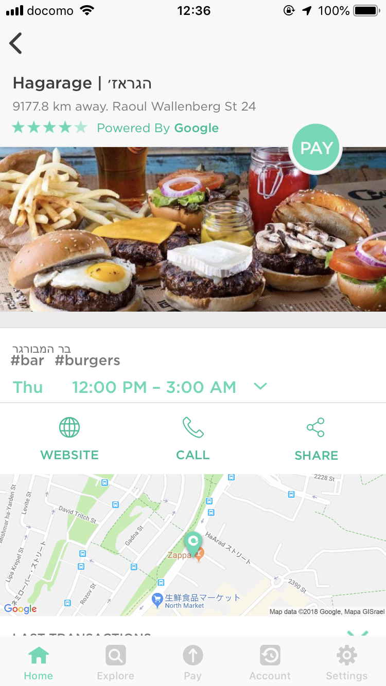
写真2.「Colu」のアプリ画面 加盟店の情報がわかりやすく表示されている
実際にダウンロードして驚いたことは、その加盟店の多さだ。アプリ上でどのお店が加盟店か簡単に調べることができるのだが、カフェから美容院までさまざまな場所で決済可能だった。
さらに、テルアビブの他にもイギリスのリバプールやイーストロンドンなどでも利用可能だ。
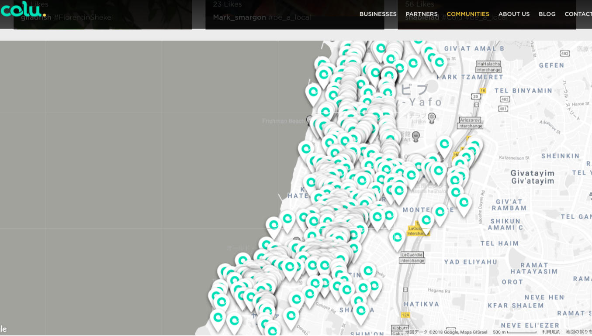
写真3.テルアビブ内の加盟店の数
自分もこのアプリをダウンロードすることができたので、利用するつもりだったが、海外のクレジットカードではチャージできないことや、滞在した日がイスラエルの正月でほとんどのお店が閉まっていたため体験することはできなかった。次回はぜひ利用して、独自の地域通貨を取得したい。
Webの記事（https://medium.com/colu/everyday-payments-with-crypto-is-closer-than-you-think-99a66256d449）によれば、「Colu」の利用者は年々増加しており、テルアビブではブロックチェーンを利用した決済が浸透し始めているようだ。
1.2タクシー配車アプリ「Gett」
イスラエルでタクシーを利用するときは、世界的に人気となっている配車アプリ「Uber」より、「Gett」と呼ばれるアプリを使う方が主流であった。使い方はUber同様、まずアプリをダウンロードしてクレジットカードを登録する。配車の際は、自分の位置情報サービスを利用して指定した場所にタクシーを呼ぶことができ、支払いは登録したカードで行える。このGettを利用すれば現金無しで乗車可能だった。
テルアビブはもちろん、エルサレムでもこのGettは利用可能であった。街中を歩くと、Gettと書かれた旗を掲げたタクシーを見つけることができるだろう。
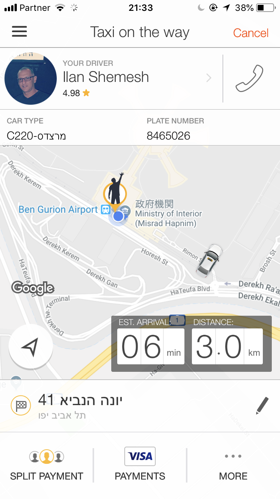
写真4.「Gett」アプリ画面 日本のクレジットカードでも利用可能だ
1.3充実するシェアライドサービス
このキャッシュレスの旅で活躍するシェア自転車はテルアビブでも普及していた。テルアビブでは「Tel-O-Fun」と呼ばれるシェア自転車のステーションを多く見かけた。街中でもこの自転車を使っている人を何人か見かけることができた。
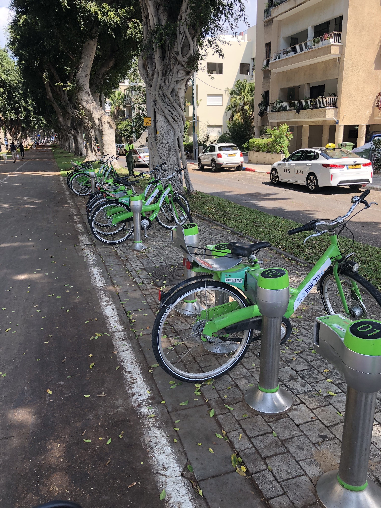
写真5.「Tel-O-Fun」のステーション 空きが多い
ただ、テルアビブでは中国でよく利用した「Mobike」もちらほら設置されていた。利用終了時にステーションに止めなければならない「Tel-O-Fun」に比べると、やはりどこでも乗り捨て可能な「Mobike」の方が楽であった。
また今回は使用する時間がなかったが、自転車以外にもキックボードのシェアライド「BIRD」も街中でよく見かけた。
1.4交通系ICカード「Rav-Kavカード」は現金がないと使いづらい
イスラエルでの交通系ICカードとしては、「Rav-Kavカード」が有名である。このカードはバスやトラムなどの交通機関で利用可能で、このカードを利用して乗車すると割引などもされるのだが、入手時には現金が必要だ。
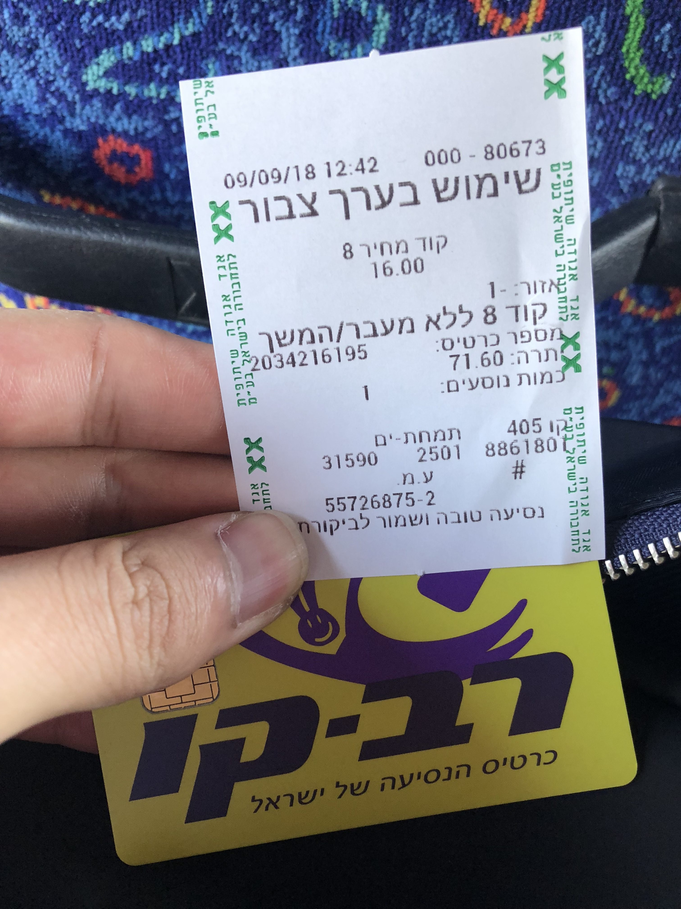
写真6.経緯は割愛するが、このカードは2枚持っていた方から運よく1枚いただけたため、現金を利用せずに乗車することができた
トラム乗り場付近にはこのカードのチャージができる専用機械が置いてあったが、現金でしかチャージができなかった。
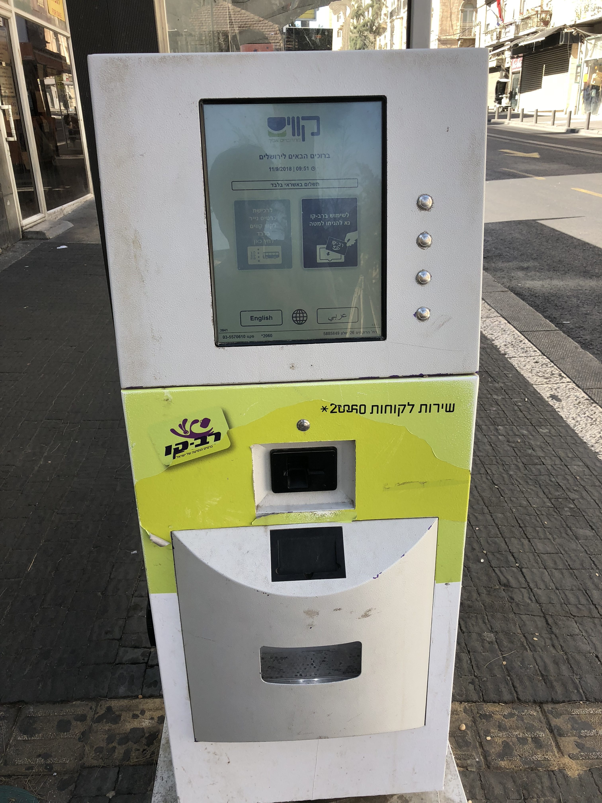
写真7.トラム乗り場付近で見かけたチャージ機
2.エルサレムのキャッシュレス事情
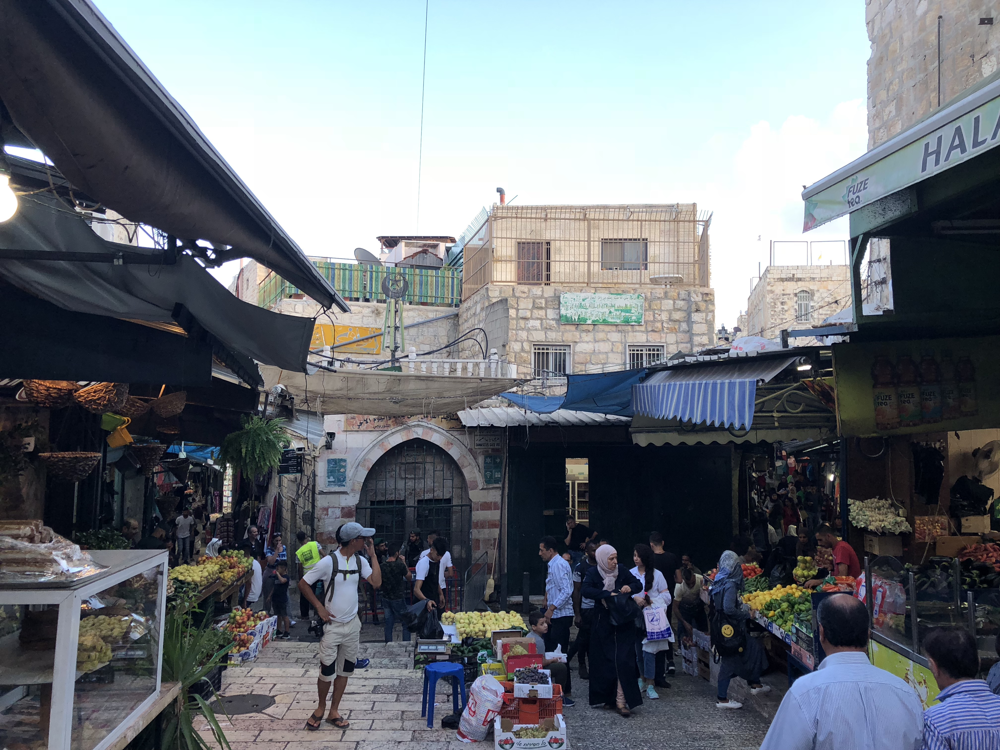
写真8.エルサレムの市場
首都テルアビブからバスで1時間弱ほどの位置にあるエルサレム。三つの宗教が混在するこの土地は観光地としてあまりにも有名だが、果たしてテルアビブと比べるとどこまで浸透しているのか。
2-1.テルアビブに比べると
基本的に、高額なお土産屋ではカード決済端末が置いてある。テルアビブではほとんどのコンビニやレストランでクレジットカード決済が可能であったが、ここエルサレムではカード決済できるレストランは少なく、夕食に辿り着くまで4、5件は断られてしまった。またエルサレム周辺の現地の方にインタビューしたところ、先述したColuを知っている人はいなかった。やはりエルサレムより首都テルアビブの方が、キャッシュレスが浸透しているようだった。
3.気になったカード決済手段
テルアビブやエルサレムでのカード決済の特徴として、少額決済は全て磁気カードによるスキャン（磁気ストライプ型）で行われていたことが挙げられる。ICカードやPINコードの入力は不要だった半面、スキミングの不安が少しあった。後述するトルコでは全てのカード決済でICチップによるPINコードの入力が必要であり、同じ中東でも決済手段の違いを見ることができた。
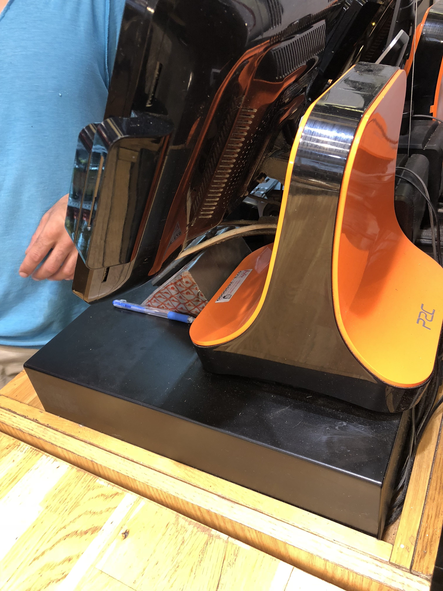
写真9.ピザ屋のレジ 磁気カードしか利用できなかった
4.イスラエルまとめ
今回インタビューしたイスラエル人の多くは自身の考えをはっきり持っており、何かを聞くとしっかり意見を述べてくれるなど、その国民性を感じることができた。イスラエルは小国で、しかもほとんどのIT企業が首都テルアビブに集中しており、今まさに新たなサービスが生まれているような勢いであった。今回調査した「Colu」をはじめとする、イスラエル発のベンチャー企業の今後が非常に楽しみである。また寺田さんは、「イスラエルはネット環境が良く、つながりやすい」と仰っており、この旅を通してキャッシュレスが進む要因の一つは通信速度にあるのだと実感した。
トルコ
2018年中盤から、アメリカとの関係悪化で通貨リラの下落が止まらないトルコ。実際に現地の方はお金についてどう考えているのかなどを調査したく、訪れる予定のなかったトルコを急遽追加した。トルコのキャッシュレス事情は全くもって知らなかったが、実はトルコではカード決済が普及している。
1.実はカード利用比率は高い
「電子決済総覧」によると、トルコのキャッシュレス比率は欧州ではイギリス・スウェーデンに続いて3番目に高く、デビットカードよりクレジットカードが普及している。
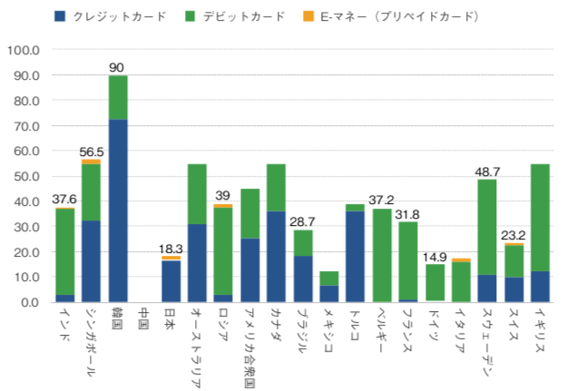
写真10. 民間最終消費支出に占める電子決済サービスの取扱高シェア（出典：電子決済総覧）
実際にイスタンブール市内を回ってみると所々でATMが設置されており、現地の方が現金を引き出している光景をよく目にした。またさまざまな銀行のATMが乱立していた。
写真11.イスタンブールではさまざまな種類のATMが設置されている
1.1市内にはスマホATMも
特に一番目にすることが多かったATMはGarantiのものだった。
Garantiは1946年から続いているトルコで二番目に大きな銀行である。実際にATMを操作してみると、QRコードが表示されたので、現地の人に協力してもらいながら専用アプリ「GarantiOne」をダウンロード。トルコの携帯番号などを所有していなかったため利用することはできなかったが、現地の方に教えてもらったことや帰国後にGarantiのHPで調べたことをまとめると、専用アプリからこのQRコードをスキャンすればキャッシュカード無しで口座引き出しが可能になる。いわゆるスマホATMだ。
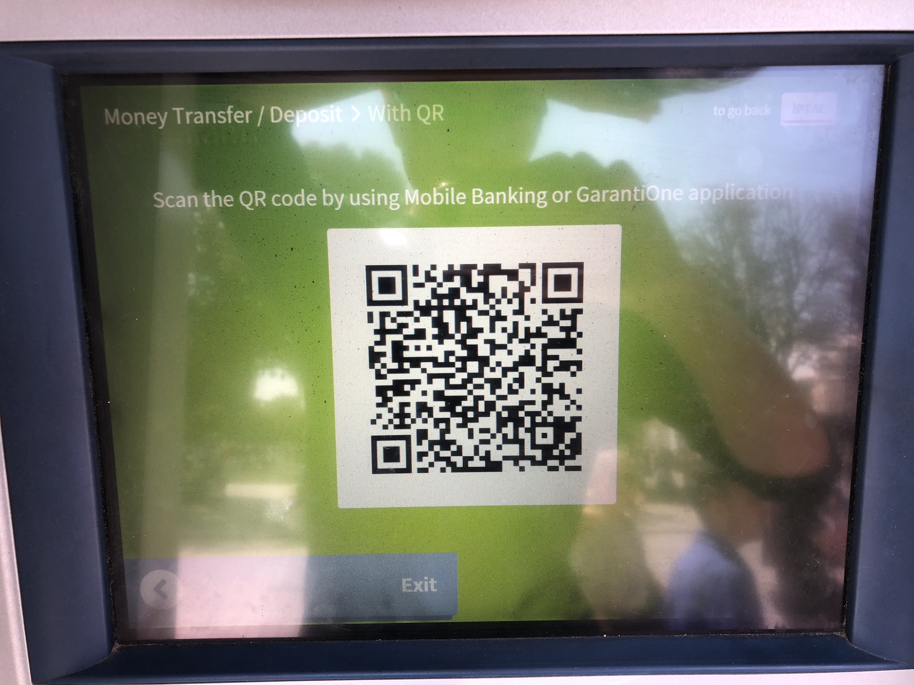
写真12.GarantiのATMではQRコードによる口座引き出しも可能だ
1.2レストランではカード決済可能だが
イスタンブール市内でのレストランやチェーン店などでは、データが示す通りカード普及率が高いためカード決済が可能であった。またトルコを訪れる観光客にとってお土産を買うには外せないグランバザールなどの露店でも、洋服や絨毯など比較的高額なお店では決済端末が設置されていた。イスタンブールでは先述したイスラエルとは違い、ほぼ全てのカード決済時にPINコードを入力する必要があった。そのため後述するタクシーに乗車した際に、オーストラリアで普及していたPINコード不要の非接触決済カードを利用したが、エラーが出た。
しかし、飲料水や食べ物などの少額決済においてはカード決済端末を設置しているお店はなかなか見当たらない。市内にある露店ではほとんどカード決済を断られ、またキオスクなどでは、決済端末はあるもののあまり利用している人はいないと店主が話していた。手数料が安く抑えられることで少額決済に有利なQRコード決済も一切見つけることができず、まだ現金決済が主流であった。
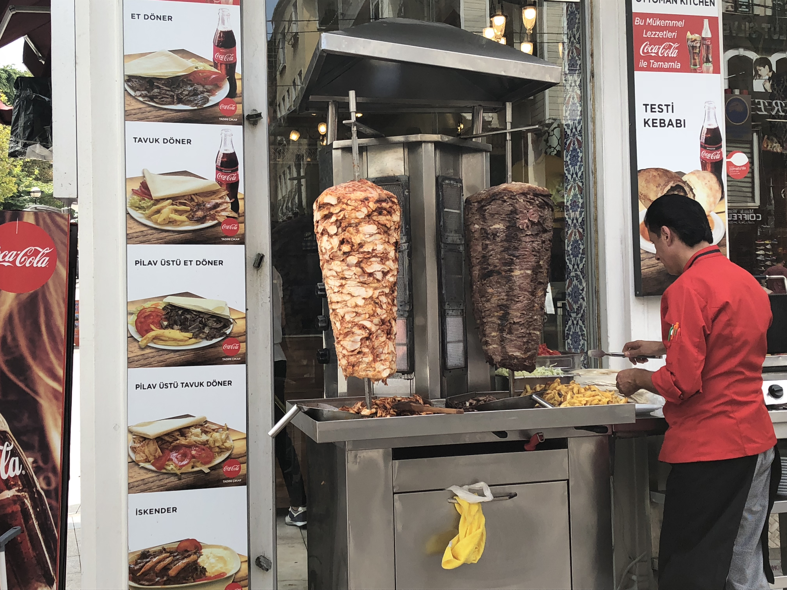
写真13.ケバブなどの少額決済には現金が必要だ
2.移動は「イスタンブールカード」が必須
各地で交通系ICカードが必須となるこの旅だが、トルコでもそれを購入することができた。「イスタンブールカード」と呼ばれる交通系ICカードは駅構内やキオスクなどで購入可能。このカードがあれば、地下鉄やトラムに乗車できる。また日本では見かけないが、この国では公衆トイレを使用するには現金が必要となる。ただし市内ではイスタンブールカードがあれば現金がなくとも利用することができた。
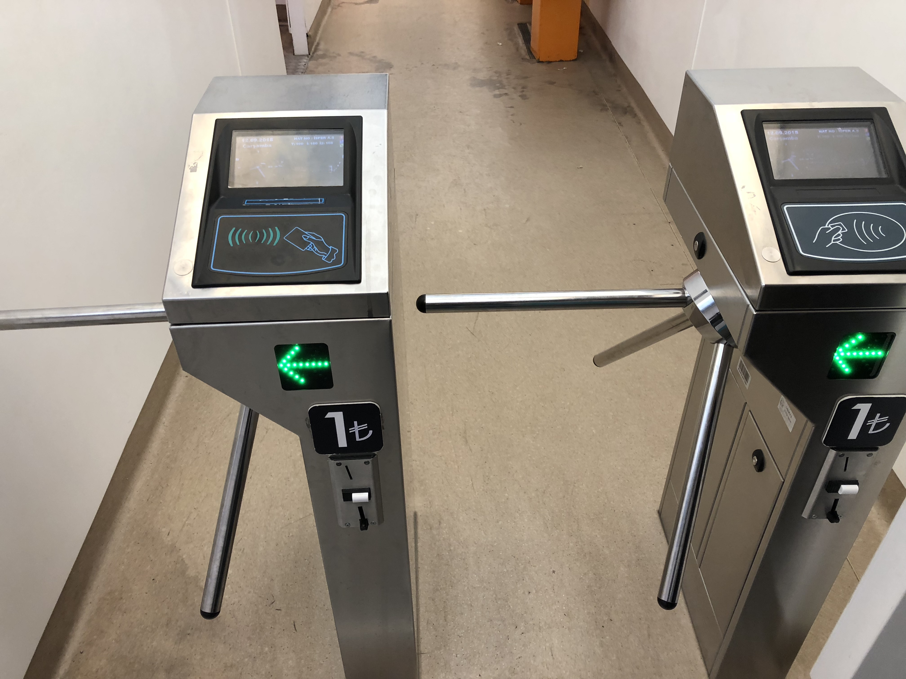
写真14.イスタンブール市内の公衆トイレでは交通系ICカードが利用できた
日本のSuicaや台湾の悠遊カードなどとは違い、コンビニなどでの少額決済はできなかった。
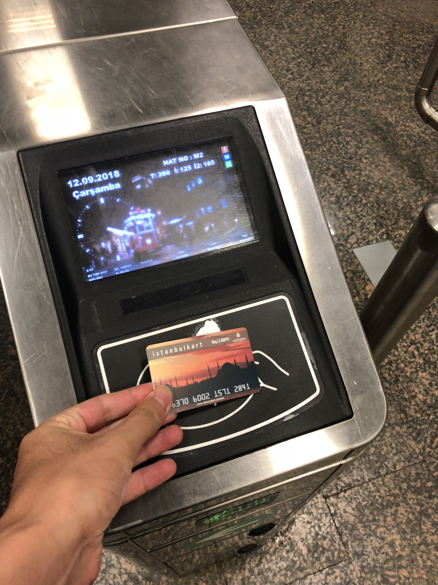
写真15.カード利用時の様子
2.1タクシーに注意
残念ながらタクシーではこのイスタンブールカードを利用することができない。トルコのタクシーは基本現金払いだ。
また、トルコではUberが禁止されているため現金を使わずタクシーに乗ることはできないと思っていたが、決済端末を設置しているタクシーも一部存在した。しかし、カード決済を利用すると通常料金より数十％のサービス料金を上乗せする運転手もいるので注意が必要だった。
良心的な値段で乗せてくれた運転手に聞くと、カード決済だと振込が数日後になるから現金でもらった方がうれしいとチラチラこちらと目を合わせながら教えてくれた。
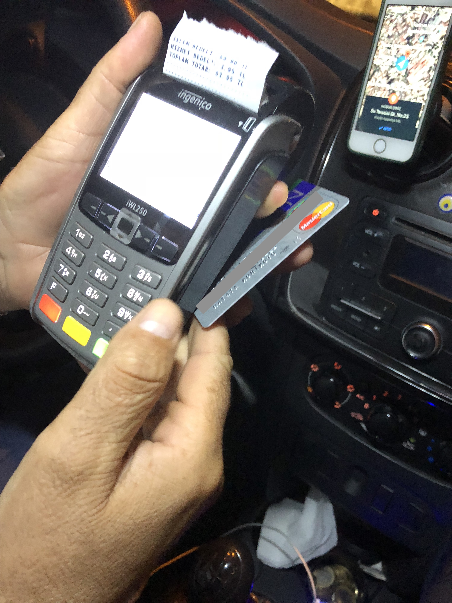
写真16.タクシーでのカード決済
3.現地の人に聞いてみた 金融危機の問題
街中で数十人に自国通貨リラについて聞いてみたが、全体的にこの件に対して「興味がない」といったところだった。「政府のトップの問題だから自分達にはどうしようもない」という意見も多かった。もちろん実際に影響があるのは輸出入などの対外的な部分であり、実生活にはあまり関係がないと思うが、個人的には何かしらの意見を持っている方が多いと想像していたため意外な結果だった。ブランド品はすでに価格調整が入っており、観光客が列をなして並んでいる光景はもう見ることはできなかった。しかしリラ下落により観光客が増加しているのは事実で、いつもより賑わっているイスタンブールであった。
4.トルコまとめ
データ上ではカード決済率は高いが、自分が実際に体感した範囲ではカードのみでは不自由を感じた。トルコ風アイスを代表するトルコならではの体験をしたい方は現金を持ち歩くことをお勧めする。
次回はついに欧州に突入。「現金が消えた国」とも呼ばれるキャッシュレス比率トップの第7カ国目スウェーデンを調査します！